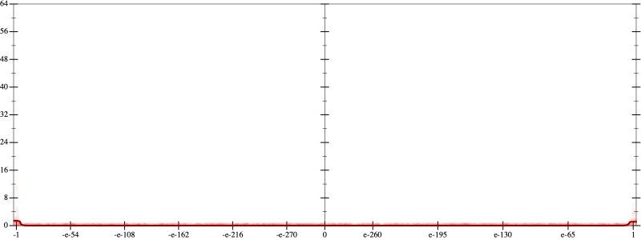
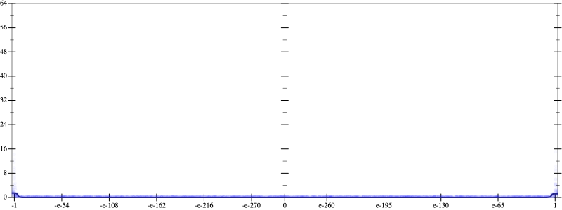
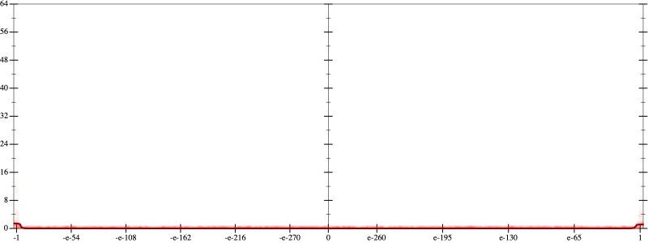
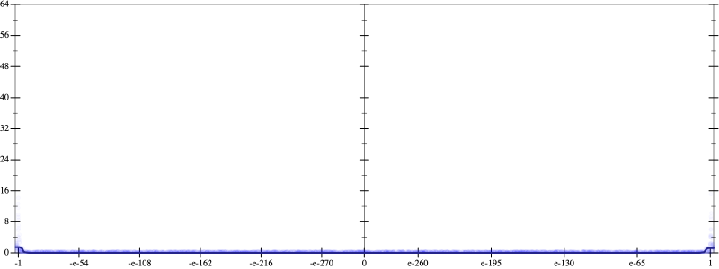

Initial program 0.0
\[\left(\left(\left(\left(\left(\left(\left(\left(-17643225600.0 + 317578060800.0 \cdot \left(x \cdot x\right)\right) + -846874828800.0 \cdot \left(\left(\left(x \cdot x\right) \cdot x\right) \cdot x\right)\right) + 790416506880.0 \cdot \left(\left(\left(\left(\left(x \cdot x\right) \cdot x\right) \cdot x\right) \cdot x\right) \cdot x\right)\right) + -338749931520.0 \cdot \left(\left(\left(\left(\left(\left(\left(x \cdot x\right) \cdot x\right) \cdot x\right) \cdot x\right) \cdot x\right) \cdot x\right) \cdot x\right)\right) + 75277762560.0 \cdot \left(\left(\left(\left(\left(\left(\left(\left(\left(x \cdot x\right) \cdot x\right) \cdot x\right) \cdot x\right) \cdot x\right) \cdot x\right) \cdot x\right) \cdot x\right) \cdot x\right)\right) + -9124577280.0 \cdot \left(\left(\left(\left(\left(\left(\left(\left(\left(\left(\left(x \cdot x\right) \cdot x\right) \cdot x\right) \cdot x\right) \cdot x\right) \cdot x\right) \cdot x\right) \cdot x\right) \cdot x\right) \cdot x\right) \cdot x\right)\right) + 601620480.0 \cdot \left(\left(\left(\left(\left(\left(\left(\left(\left(\left(\left(\left(\left(x \cdot x\right) \cdot x\right) \cdot x\right) \cdot x\right) \cdot x\right) \cdot x\right) \cdot x\right) \cdot x\right) \cdot x\right) \cdot x\right) \cdot x\right) \cdot x\right) \cdot x\right)\right) + -20054016.0 \cdot \left(\left(\left(\left(\left(\left(\left(\left(\left(\left(\left(\left(\left(\left(\left(x \cdot x\right) \cdot x\right) \cdot x\right) \cdot x\right) \cdot x\right) \cdot x\right) \cdot x\right) \cdot x\right) \cdot x\right) \cdot x\right) \cdot x\right) \cdot x\right) \cdot x\right) \cdot x\right) \cdot x\right)\right) + 262144.0 \cdot \left(\left(\left(\left(\left(\left(\left(\left(\left(\left(\left(\left(\left(\left(\left(\left(\left(x \cdot x\right) \cdot x\right) \cdot x\right) \cdot x\right) \cdot x\right) \cdot x\right) \cdot x\right) \cdot x\right) \cdot x\right) \cdot x\right) \cdot x\right) \cdot x\right) \cdot x\right) \cdot x\right) \cdot x\right) \cdot x\right) \cdot x\right)\]
Taylor expanded around inf 0.0
\[\leadsto \left(\left(\left(\left(\left(\left(\left(\left(-17643225600.0 + 317578060800.0 \cdot \left(x \cdot x\right)\right) + -846874828800.0 \cdot \left(\left(\left(x \cdot x\right) \cdot x\right) \cdot x\right)\right) + 790416506880.0 \cdot \left(\left(\left(\left(\left(x \cdot x\right) \cdot x\right) \cdot x\right) \cdot x\right) \cdot x\right)\right) + \color{blue}{-338749931520.0 \cdot {x}^{8}}\right) + 75277762560.0 \cdot \left(\left(\left(\left(\left(\left(\left(\left(\left(x \cdot x\right) \cdot x\right) \cdot x\right) \cdot x\right) \cdot x\right) \cdot x\right) \cdot x\right) \cdot x\right) \cdot x\right)\right) + -9124577280.0 \cdot \left(\left(\left(\left(\left(\left(\left(\left(\left(\left(\left(x \cdot x\right) \cdot x\right) \cdot x\right) \cdot x\right) \cdot x\right) \cdot x\right) \cdot x\right) \cdot x\right) \cdot x\right) \cdot x\right) \cdot x\right)\right) + 601620480.0 \cdot \left(\left(\left(\left(\left(\left(\left(\left(\left(\left(\left(\left(\left(x \cdot x\right) \cdot x\right) \cdot x\right) \cdot x\right) \cdot x\right) \cdot x\right) \cdot x\right) \cdot x\right) \cdot x\right) \cdot x\right) \cdot x\right) \cdot x\right) \cdot x\right)\right) + -20054016.0 \cdot \left(\left(\left(\left(\left(\left(\left(\left(\left(\left(\left(\left(\left(\left(\left(x \cdot x\right) \cdot x\right) \cdot x\right) \cdot x\right) \cdot x\right) \cdot x\right) \cdot x\right) \cdot x\right) \cdot x\right) \cdot x\right) \cdot x\right) \cdot x\right) \cdot x\right) \cdot x\right) \cdot x\right)\right) + 262144.0 \cdot \left(\left(\left(\left(\left(\left(\left(\left(\left(\left(\left(\left(\left(\left(\left(\left(\left(x \cdot x\right) \cdot x\right) \cdot x\right) \cdot x\right) \cdot x\right) \cdot x\right) \cdot x\right) \cdot x\right) \cdot x\right) \cdot x\right) \cdot x\right) \cdot x\right) \cdot x\right) \cdot x\right) \cdot x\right) \cdot x\right) \cdot x\right)\]
Applied simplify0.0
\[\leadsto \color{blue}{\left(\left(\left(x \cdot x\right) \cdot \left(x \cdot x\right)\right) \cdot \left(\left(\left(\left(x \cdot x\right) \cdot \left(x \cdot x\right)\right) \cdot \left(\left(x \cdot x\right) \cdot \left(x \cdot x\right)\right)\right) \cdot \left(\left(x \cdot x\right) \cdot \left(x \cdot x\right)\right)\right)\right) \cdot \left(-20054016.0 + x \cdot \left(x \cdot 262144.0\right)\right) + \left(\left(\left(\left(\left(\left(x \cdot x\right) \cdot \left(x \cdot x\right)\right) \cdot \left(\left(x \cdot x\right) \cdot \left(x \cdot x\right)\right)\right) \cdot \left(\left(x \cdot x\right) \cdot \left(x \cdot x\right)\right)\right) \cdot \left(-9124577280.0 + 601620480.0 \cdot \left(x \cdot x\right)\right) + \left(\left(\left(x \cdot x\right) \cdot \left(x \cdot x\right)\right) \cdot \left(\left(x \cdot x\right) \cdot 790416506880.0 + -846874828800.0\right) + \left(\left(x \cdot 317578060800.0\right) \cdot x + -17643225600.0\right)\right)\right) + \left(\left(\left(\left(x \cdot x\right) \cdot \left(x \cdot x\right)\right) \cdot \left(\left(x \cdot x\right) \cdot \left(x \cdot x\right)\right)\right) \cdot \left(75277762560.0 \cdot \left(x \cdot x\right)\right) + -338749931520.0 \cdot {x}^{8}\right)\right)}\]
Taylor expanded around 0 0.0
\[\leadsto \left(\left(\left(x \cdot x\right) \cdot \left(x \cdot x\right)\right) \cdot \left(\left(\left(\left(x \cdot x\right) \cdot \left(x \cdot x\right)\right) \cdot \left(\left(x \cdot x\right) \cdot \left(x \cdot x\right)\right)\right) \cdot \left(\left(x \cdot x\right) \cdot \left(x \cdot x\right)\right)\right)\right) \cdot \left(-20054016.0 + x \cdot \left(x \cdot 262144.0\right)\right) + \left(\left(\left(\left(\left(\left(x \cdot x\right) \cdot \left(x \cdot x\right)\right) \cdot \left(\left(x \cdot x\right) \cdot \left(x \cdot x\right)\right)\right) \cdot \left(\left(x \cdot x\right) \cdot \left(x \cdot x\right)\right)\right) \cdot \left(-9124577280.0 + 601620480.0 \cdot \left(x \cdot x\right)\right) + \left(\color{blue}{\left(790416506880.0 \cdot {x}^{6} - 846874828800.0 \cdot {x}^{4}\right)} + \left(\left(x \cdot 317578060800.0\right) \cdot x + -17643225600.0\right)\right)\right) + \left(\left(\left(\left(x \cdot x\right) \cdot \left(x \cdot x\right)\right) \cdot \left(\left(x \cdot x\right) \cdot \left(x \cdot x\right)\right)\right) \cdot \left(75277762560.0 \cdot \left(x \cdot x\right)\right) + -338749931520.0 \cdot {x}^{8}\right)\right)\]
Applied simplify0.0
\[\leadsto \color{blue}{\left(\left(\left(790416506880.0 \cdot {x}^{6} - 846874828800.0 \cdot {x}^{4}\right) + \left(-17643225600.0 + \left(x \cdot 317578060800.0\right) \cdot x\right)\right) + \left(x \cdot \left(262144.0 \cdot x\right) + -20054016.0\right) \cdot \left({\left(x \cdot x\right)}^{\left(3 + 1\right)} \cdot {\left(x \cdot x\right)}^{\left(3 + 1\right)}\right)\right) + \left(\left({\left(x \cdot x\right)}^{\left(3 + 1\right)} \cdot \left(\left(x \cdot 75277762560.0\right) \cdot x\right) + -338749931520.0 \cdot {x}^{8}\right) + {\left(\left(x \cdot x\right) \cdot \left(x \cdot x\right)\right)}^{3} \cdot \left(-9124577280.0 + 601620480.0 \cdot \left(x \cdot x\right)\right)\right)}\]
 
